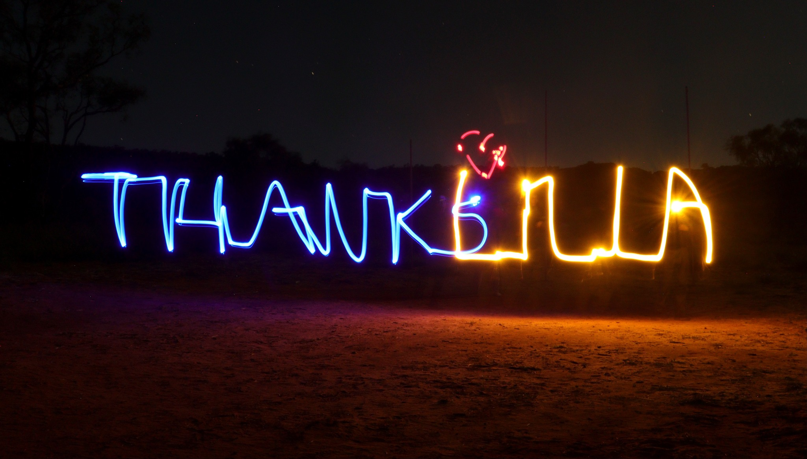

Lilla is an aboriginal outstation community located in the Watarrka National Park. In the native tongue of the Luritja country, Lilla means sweet water. If you visit Lilla you will get a chance drink the best tasting water that has been filtered through the Mereenie sandstone from underground springs.
For twenty years, Reg Ramsden, owner of Remote Tours has been forging a close relationship with the people of Lilla. Reg has spent years with them learning and understanding their traditional culture, and trying to impart that knowledge to the visitors he brings to the area.